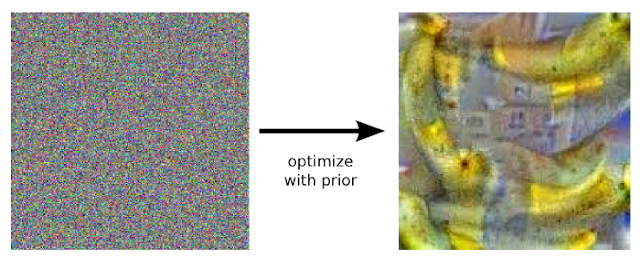
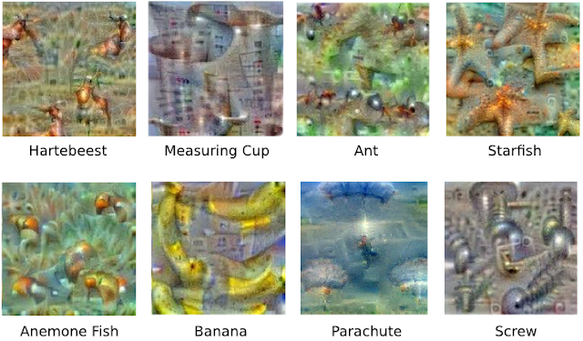
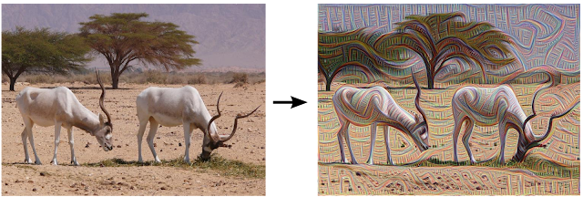
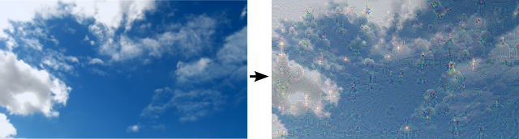
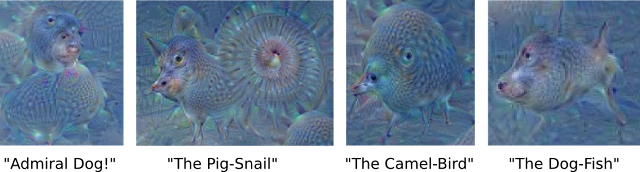
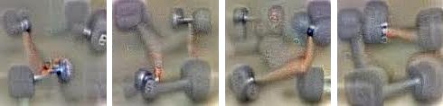
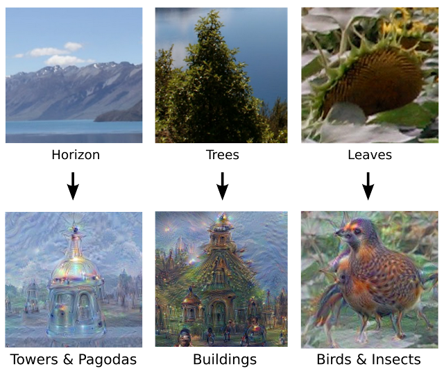
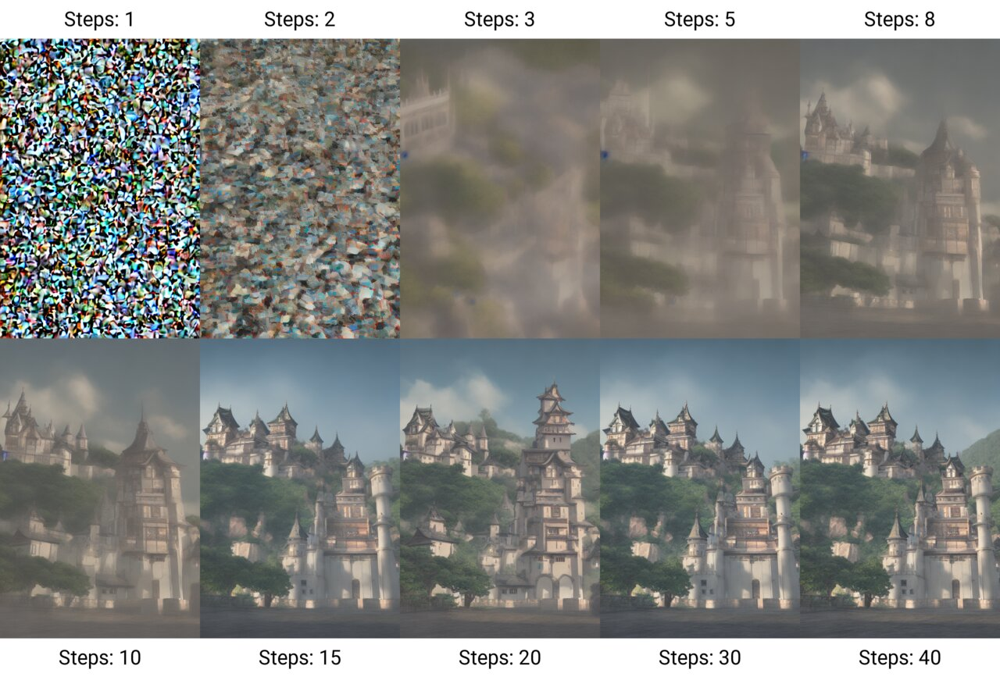

The reverse direction.
The tiny learner fitted a line. A deep vision network learns features; turn the network around to see them. A classifier is trained to map an image to a label. If you freeze its weights and run gradient ascent on a class score, the pixels change instead of the parameters. Start from noise, ask for 'banana', and the noise slowly organizes into banana-like shapes.
The result looks surreal because the network is not drawing a photograph. It is projecting its learned features back into pixel space. Low layers produce edges and strokes; higher layers assemble whole objects. Freezing the weights is the point: the question is not “what would a good image look like?” but “what does this fixed detector respond to?” The image is the answer, read backwards.
Starting from noise matters too. A blank or natural image already contains structure the network can latch onto; noise is neutral enough that the gradient has to supply the shape. Iterating the process (recognize, amplify, repeat) is what turns a faint preference into a full-blown hallucination.
A window into learned features.
Inceptionism (Mordvintsev et al., 2015) is a simple interpretability tool. It shows that the network's knowledge is distributed across layers and can be visualized by optimizing the input. It also explains pareidolia: like a child seeing animals in clouds, the network finds its templates in noise.
The dreams also reveal associations in the training data. A dumbbell may appear with an arm because the two co-occur; a tower may grow fractal copies of itself because the network has learned a texture. These are not symbols the model understands; they are patterns it has learned to expect. The images are not evidence that the model is conscious or dreaming in the human sense. They are a picture of what the weights have learned to respond to. Nor is this how modern image generators work: a diffusion model is trained to reverse noise, so it learns the distribution of images. Inceptionism interrogates a classifier that was never trained to make images at all. That is exactly why its “dreams” look like the inside of a feature detector rather than a photograph.







Destroy a picture. Learn to undo it.
Modern image generators learn the same trick from data. Take a training photograph, add a little random noise, record the result. Add more noise, record again. Repeat until the picture is pure static. Do this for millions of images and you have a long record of pictures dissolving.
A network is then trained to reverse one step at a time. Given a noisy image, it predicts the noise that was just added and subtracts it. The forward destruction is fixed, so all the learning goes into the repair. This is a diffusion model (Ho et al., 2020), the recipe behind Stable Diffusion, DALL·E 2, and Imagen.
At generation time there is no training image to destroy. You start with fresh random noise and run the learned repair steps in reverse. Each step removes a little noise, and a new picture appears. Inceptionism asks what a fixed classifier responds to. Diffusion learns the distribution of images well enough to build one from nothing.


The short version.
Start with random noise. Learn to reverse the damage. Get an image.
A diffusion model is trained on real images that are destroyed step by step with random noise. It learns to undo each step, so generation begins at pure noise and ends with a new picture.